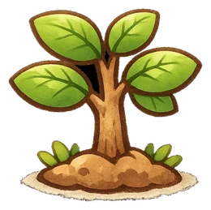
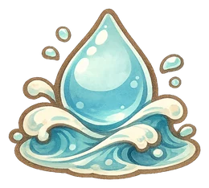
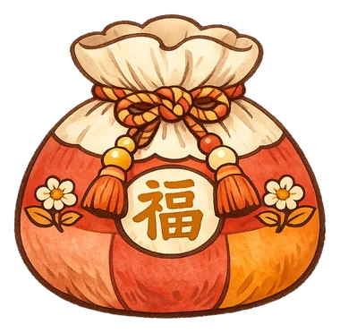
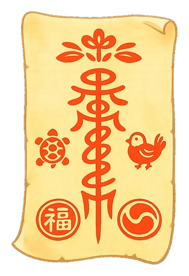
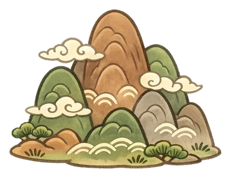

어려운 말은 빼고, 성향·일·돈·관계를 친구처럼 풀어줄게.

목
수양력과 음력을 먼저 골라줘.

모르면 세 기둥으로도 볼 수 있어.
생일 속 중심 기운
해석 근거는 같고 표현의 세기만 달라져.
네 사주의 중심 기운을 찾는 중…


몇 점인지 매기지 않을게. 어디서 잘 맞고 어디서 부딪히는지만 짚어줄게.
아직 없어
궁금한 사람의 생일을 알려줘.
이 기기에만 저장되고, 어디로도 보내지 않아.
아직 저장된 게 없어
다음에 열 때 생년월일을 다시 안 넣어도 돼.
이 앱이 무엇을 보고 풀이하는지